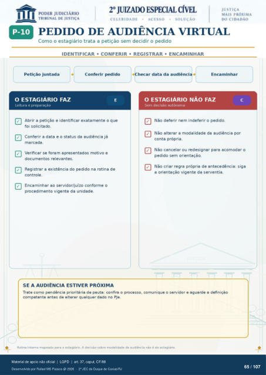

Transcrição automática em português, ainda não revisada. Confira grafia, prazos e termos jurídicos na imagem e no PDF antes de utilizar.
PEDIDO DE AUDIÊNCIA VIRTUAL
Como o estagiário trata a petição sem decidir o pedido
IDENTIFICAR • CONFERIR • REGISTRAR • ENCAMINHAR
Petição juntada
O ESTAGIARIO FAZ
Leitura e preparação Conferir pedido
hecar data da audiênci Encaminhar
Abrir a petição e identificar exatamente o que foi solicitado.
Conferir a data e o status da audiência já marcada.
Verificar se foram apresentados motivo e documentos relevantes.
Registrar a existência do pedido na rotina de controle.
Encaminhar ao servidor/juízo conforme o procedimento vigente da unidade.
SE A AUDIÊNCIA ESTIVER PRÓXIMA
O ESTAGIARIO NÃO FAZ
Sem decisão autónoma Não deferir nem indeferir o pedido.
Não alterar a modalidade da audiência por conta própria.
Não cancelar ou redesignar para acomodar o pedido sem orientação.
Não criar regra própria de antecedência: siga a orientação vigente da serventia.
Trate como pendência prioritária de pauta: confira o processo, comunique o servidor e aguarde a definiçêo competente antes de alterar qualquer dado no PJe.
Rotina interna mapeada para o estagiário. A decisão sobre modalidade da audiência não ó do estagiário.
Ver também o infográfico original (página 65)
